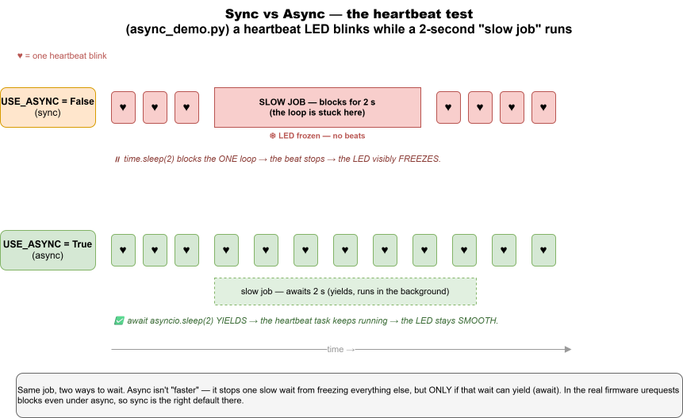

Day 5 — Async + Final Project
Goal: Compare the synchronous and async versions of the firmware to see what async/await actually changes, then build a feature of your choice.
Time: ~2 hours.
Prereqs: Day 4 — global alarm working, you can add data-layer functions and routes.
🔬 See async for real: examples/day5_async/async_demo.py blinks a heartbeat LED while a fake "slow job" runs. Flip
USE_ASYNCand watch the LED freeze (sync) vs stay smooth (async) — the difference the real firmware can't show you.

Part 1 — Same behavior, two shapes (20 min)
You already know app_sync.py. Today's surprise: app_async.py does the exact same thing with the same hardware drivers and the same hub_client.py. Only the loop structure is different.
🛠 Try this: switch your board to async.
- Open
config.pyon the board (Thonny → board pane → double-click). - Change
USE_ASYNC = FalsetoUSE_ASYNC = True. - Save and press the ESP32's RESET button.
- Watch the LCD: same "Connecting…" → "Ready". Test that the dashboard toggle still moves the LED. Identical user-facing behavior.
✅ Milestone 5.1: The board behaves identically with USE_ASYNC=True.
Part 2 — Diff the two files (25 min)
🛠 Try this: in PyCharm, select both app_sync.py and app_async.py in the project tree, right-click → Compare Files. PyCharm shows them side by side with differences highlighted.
Notice:
- The helpers (_connect_wifi, _build_state, _apply_state, _toggle) are identical.
- app_sync.py has ONE while True loop checking everything sequentially, with time.sleep_ms(50).
- app_async.py has three concurrent tasks (task_buttons, task_motion, task_keepalive), each with its own while True and its own await asyncio.sleep_ms(...).
What await actually does
In sync code:
time.sleep_ms(50) # CPU does NOTHING for 50 ms.
In async code:
await asyncio.sleep_ms(50) # "I'll be busy in 50 ms — go run other tasks meanwhile."
So while task_keepalive is sleeping for 1 second between heartbeats, task_buttons and task_motion keep running. In the sync version, the single loop has to round-robin everything, so it CAN'T sleep for a full second — that's why we used time.sleep_ms(50) (loop runs 20×/sec).
💡 Subtle point: await only switches tasks at await points. If a task does time.sleep(5) (the synchronous version!) inside an async function, everything stops for 5 seconds. This is why our async version explicitly notes that urequests is blocking — for 100-200 ms during an HTTP call, the other tasks pause.
🛠 Try this — observe it: add a print to task_buttons that fires on every loop iteration. Watch the Thonny shell during a slow operation:
async def task_buttons(button_a, button_b, led, fan, buzzer, motion, hub, lcd, ctx):
while True:
if button_a.was_pressed():
...
if button_b.was_pressed():
...
print(".", end="") # <-- add this
await asyncio.sleep_ms(30)
Press button B (which triggers an HTTP push). Watch the dots: you'll see them stream, pause briefly during the HTTP call, then resume. In the sync version, dots would only print every 50 ms regardless.
Part 3 — When to choose which (15 min)
| Scenario | Sync | Async |
|---|---|---|
| Reading a temperature once | ✅ simpler | overkill |
| Three things on three different schedules | round-robin works but complex | ✅ natural |
| One slow blocking call (HTTP, file write) | blocks everything | also blocks (without aiohttp etc.) |
| Beginner reading the code | ✅ top-to-bottom | needs await knowledge |
| You'll later add 5 more concurrent activities | gets messy | ✅ scales |
Take-away: for most embedded code, sync is fine and clearer. Async pays off when you have several independent activities with different timing.
For our project, sync is the default, async exists because it's a great teaching example of a real refactor.
Part 4 — Final project (60 min)
Pick ONE of these and build it end-to-end. You have ~1 hour. A counsellor is around if you're stuck. Show the result before you leave.
Option A — "Doorbell" (medium)
Add a third button option: pressing button B when the LCD shows DOORBELL flashes the LED on all houses for 2 seconds.
Hints:
- Add "doorbell" to the MENU tuple in app_sync.py.
- New endpoint POST /api/ring_doorbell that walks every house and sets state.led.active = True and pending_state_update = True.
- A way to turn LEDs back off after 2 sec — easiest is a threading.Timer in app.py.
- Press button B with menu on doorbell → hub_client POST to your new endpoint.
Option B — "Fan party" (easy)
Make the fan spin in the OPPOSITE direction every other time button B presses it. (The fan supports clockwise + counter-clockwise — see devices/fan.py.)
Hints:
- Track a clockwise = True variable in app_sync.py.
- When toggling the fan ON, alternate the direction.
- Optionally: add a dashboard column "spin direction" so you can see it remotely.
Option C — "Statistics page" (medium)
Add a new web page at /stats that shows:
- Total houses
- How many active vs. lost
- How many armed
- Last alarm fired (timestamp)
Hints:
- New route in app.py returning render_template("stats.html").
- New template under templates/.
- Track "last alarm" by adding a module-level variable in houses.py set inside report_motion.
Option D — "Soft alarm escalation" (hard)
Currently the buzzer either fires (alarm true) or doesn't. Make it escalate: first 5 seconds beep softly (lower duty cycle), next 5 seconds beep medium, after 10 seconds full blast.
Hints:
- Buzzer needs a set_level(0..1023) method.
- Track when the alarm was triggered (timestamp) — easiest in app_sync.py.
- Reset the level when alarm is cleared.
Option E — "Two-house Morse chat" (hard, two teams)
Pair with another team. Pressing your button A sends a "dot" (LED flash on partner's house, 100 ms). Holding it sends a "dash" (300 ms). Try sending HI (•••• ••).
Hints:
- New endpoint POST /api/houses/<uid>/flash with body {"ms": 100}.
- Tell button A which target uid (hardcode in secrets.py).
- Long-press detection: store the press start time, look at duration on release.
Or invent your own
Run the idea past a counsellor first to make sure it fits the time.
✅ Milestone 5.2: Your final project works end-to-end. Demo it.
Part 5 — Wrap-up (10 min)
What this whole project taught you
You built and understood:
- Server-side Python: HTTP, Flask, route handlers, JSON, threading + locks.
- Browser-side JS:
fetch, JSON, polling, dynamic table rendering. - Embedded Python: GPIO, PWM, I2C, interrupts, async/await.
- Networking: WiFi setup, HTTP client, request/response cycles.
- Architecture: separating data from routes, separating drivers from app logic, two implementations sharing one HTTP client.
That's a real distributed system. Smaller than what you'd build at a job, but the same shape.
Where to go next
- Front-end — try rebuilding the dashboard with React or HTMX for fun.
- Real protocol — replace polling with WebSockets or MQTT for instant push (no 1-second delay).
- Persistence — add a SQLite database so houses don't disappear on hub restart.
- Security — add API tokens (right now anyone on the WiFi can toggle anyone's LED).
- Other boards — Raspberry Pi Pico W runs MicroPython too, with different sensors.
- Other languages — try writing the firmware in Arduino C++ to feel the difference.
Good books and resources (offline-friendly)
- The MicroPython docs — bundled in
claude/docs/if your camp pre-downloaded them. - The Flask docs — same.
- The original
SigmaHouse-master/repo for ideas (RFID, OLED, more sensors).
Final milestone
✅ Milestone 5.3: Demo your project to the group. Explain in 2 minutes: - What you built. - One thing that surprised you. - One thing you'd do differently.
That's the end. Good work — you wrote real code that runs on real hardware that talks to a real server. The next thing you build will be easier.
← back to INDEX.md